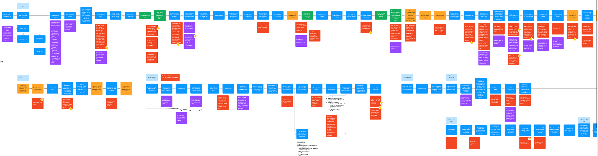
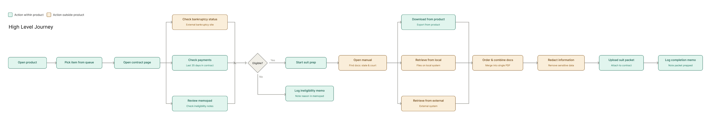
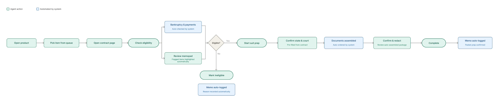
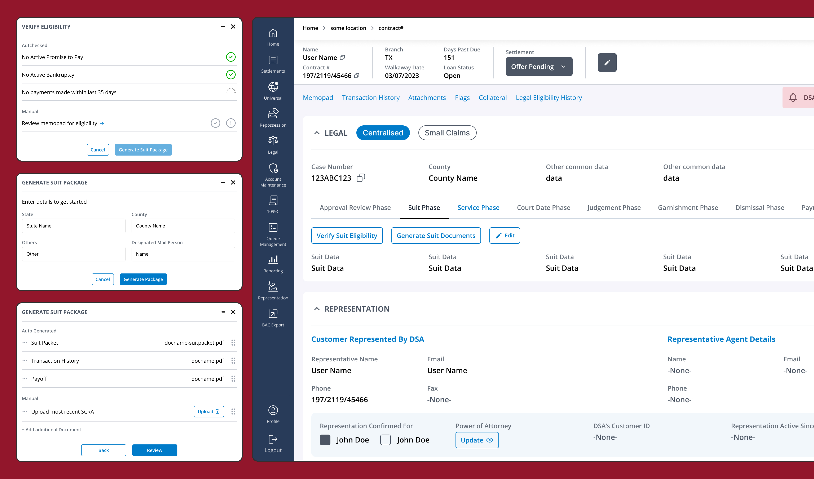

Onboarding New Hires to Complexity
A well-known financial institution had an internal platform used to manage loan-related processes. A specialised small claims team's job was to prepare legal documents, submit them to court, and serve notices to the relevant parties.
The platform's complexity was entrenched: each state — and often individual judges — imposed unique document requirements, formatting standards, and procedural rules. Veteran employees mastered these nuances over years, while new hires faced stacks of manuals yet still struggled and made errors.
"The goal: reduce the time and effort needed for training, and explore ways to streamline the process itself."
Fast Scoping, Focused Discovery
With a tight deadline and a team spread across states and roles, I built a compressed but rigorous process — optimising for learning quickly and making decisions with confidence.
Understand the Landscape
I met with the supervisor to gain a high-level overview of the workflow and clarify the team's objectives. Collected existing training materials and mapped the current user journey, highlighting points of confusion and identifying gaps where processes occurred outside the platform.
Narrow the Scope
Rather than trying to fix everything, we agreed to focus on 2 states with the highest volume and 3 primary processes (the happy path). This gave us maximum impact within the deadline — and a proof-of-concept that could expand later.
Talk to the People
Conducted 6 user interviews — 1 person per process per state. I spoke to a mix of newer staff and longer-tenured employees used to older tools. A notable gap: I couldn't reach anyone brand new to the role, which I kept in mind throughout the solution design.
Design & Validate
Mapped a flowchart of the moving parts, identified what was static vs. what needed to flex by state and situation, then built high-level screens using the existing design system — enough fidelity to prototype a buildable solution.


Fragmented data sources create calculation risk
"Transaction history is hardest to deal with — the calculation requires you to look very carefully to ensure they are not overcharging or undercharging the user."
Agents cross-reference CATS, ABS, payment history, and multiple Excel spreadsheets to build a single calculation. At least 3 separate calculators exist with no single source of truth.
Unified in-product calculator that auto-pulls from CATS + ABS and flags discrepancies before filing.
Document assembly is entirely manual
"Make sure you get the most recent SCRA. There can be more than one suit package — get the most recent. Rearrange in the right order."
Building a suit or garnishment packet means hunting files across product, local folders, Excel, and external systems — ordering, redacting, and verifying recency by hand.
Guided packet builder: auto-fetch latest SCRA + suit package, enforce ordering rules, surface recency warnings.
The memopad is the only source of critical context
"Check memopad for items that could prevent filing. Check legal review, 100% double check, supervisor legal review, any promise to pay."
Legal review status, payment arrangements, supervisor sign-off, and ineligibility flags all live in unstructured free-text memos. Agents must read and interpret every memo before acting. Errors cannot be corrected after submission.
Structured eligibility checklist surfaced pre-filing; auto-parse memo flags into actionable status indicators.
Post-filing steps happen entirely outside the product
"Once efiled, get the case number and save the final doc. Update the spreadsheet. A separate team tracks case numbers for mail and adds them to CATS later."
After filing, case numbers arrive by email, are saved manually, entered into CATS, and tracked in a separate spreadsheet — often by a different team with no automated handoff.
Close the loop: auto-capture case number from court email, pre-fill CATS fields, and update POTCO without leaving the product.
The Complexity Wasn't in the Steps. It Was in the Variables.
A Common Skeleton
Despite different names and contexts, all three processes followed the same arc: prep documents → notarise → send to court → update status in CATS. The skeleton was consistent. The flesh was not.
State & Court-Level Variance
What documents to include, which formats were accepted, whether a calculation needed to be adjusted — all of this could differ by state, by court, or even by the presiding judge. This variation lived in people's heads or scattered manuals, not in the product.
External Processes Were the Real Gap
Much of the complexity happened outside CATS entirely — cross-referencing guidance documents, making judgment calls, checking parallel sources. The product didn't support this.
"We could not touch existing functionality — veteran users were accustomed to it, and other teams relied on it. Any solution had to work alongside what already existed, not replace it."
Two Layers. One Coherent System.
Visualising the full process as a flowchart helped the supervisor articulate their own process more clearly — and helped me structure a solution with two distinct but connected parts.
The training manual becomes part of the product itself. Each step in a process is surfaced in sequence — no external reference needed. New hires follow the product; veterans move faster.
A separate management interface lets supervisors update which documents are needed, what calculations apply, and what rules are in effect — by state, by court. When rules change, the product reflects it immediately.

Building the Key Screens
With the structure in place, I built a handful of high-fidelity screens using the institution's existing design system — enough to communicate the vision clearly and give the development team something concrete to build from.

What We Delivered
By end of the engagement, we'd established a two-layer solution designed to grow incrementally — a proof-of-concept that showed how embedded guidance could transform a complex, manual-dependent process into something product-native.
A Foundation to Build On
The solution was deliberately scoped as a starting point. The architecture was designed so that new states, new courts, and additional processes could be added incrementally — making future improvements far cheaper to build.
Training Time Reduced
By embedding guidance directly into the product flow, new hires could operate without needing extensive training and access to manuals that needed hours of work to create and maintain.